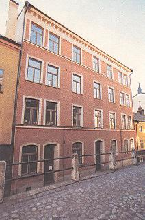
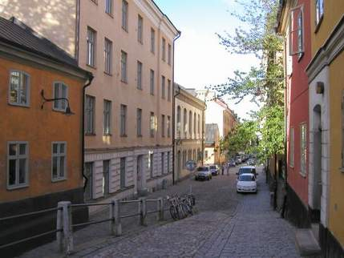

|
 Brännkyrkagatan 25 Detta hus tillkom 1896 efter ritningar av Kasper Salin med för tiden typisk spritputs med slätputsade listverk. Kasper Salin(1856-1919) var stadsarkitekt i Stockholm 1898-1916. Han har ritat ett femtontal hus i Stockholm, det mest kända är Östermalmssaluhall som uppfördes 1888 med Isak Gustaf Clason som medarkitekt. Sedan 1962 utdelas årligen Kasper Salin-priset tillnyuppförd framstående arkitektur.
|
 Brännkyrkagatan 27-31 på den vänstra sidan. Längst bort Ebeneserkyrkan, nr 31, i hörnet av Blecktornsgränd. Nr 29 är byggt 1884. Nr 27 var nybyggt år 1768. Bilden från 2004 Brännkyrkagatan 33 / Blecktornsgränd 10 På bortre sidan av Blecktornsgränd skymtar nr 33. Huset byggdes 1763-1765 och breddades inåt gården 1843 då även det nuvarande gårdshuset uppfördes. Åren 1901 och 1925om- och tillbyggdes gårdslängorna för att användas till bageri, en funktion som behölls till slutet av 1950-talet. I dag är här fritidshem.
|